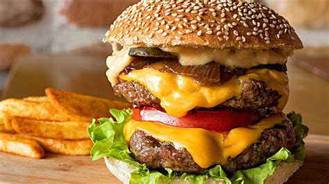

Hamburger

A hamburger, or simply burger, is a food consisting of fillings—usually a patty of ground meat, typically beef—placed inside a sliced bun or bread roll.
As versions of the meal have been served for over a century, its origin remains ambiguous.[6] The book The Art of Cookery Made Plain and Easy by Hannah Glasse included a recipe in 1758 as "Hamburgh sausage", which suggested to serve it "roasted with toasted bread under it". A similar snack was also popular in Hamburg by the name "Rundstück warm" ("bread roll warm") in 1869 or earlier,[7] and supposedly eaten by many emigrants on their way to America, but may have contained roasted beefsteak rather than Frikadeller. Hamburg steak is reported to have been served between two pieces of bread on the Hamburg America Line, which began operations in 1847. Each of these may mark the invention of the hamburger, and explain the name.
Ingredients
- 1/2 pounds lean ground beef
- 1/2 onion, finely chopped
- 1/2 cup shredded Colby Jack or Cheddar cheese
- 1 (1 ounce) envelope dry onion soup mix
- 1 egg
- 1 clove garlic, minced
- 1 tablespoon garlic powder
- 1 teaspoon soy sauce
- 1 teaspoon Worcestershire sauce
- 1 teaspoon dried parsley
- 1 teaspoon dried basil
- 1 teaspoon dried oregano
- 1/2 teaspoon crushed dried rosemary
- salt and pepper to taste
Steps
- Preheat a grill on high heat.
- Mix together ground beef, onion, cheese, onion soup mix, egg, garlic, garlic powder, soy sauce, Worcestershire sauce, parsley, basil, oregano, rosemary, salt, and pepper in a large bowl. Use your hands to form 4 patties.
- Cook patties on the preheated grill until well-done, about 5 minutes per side.